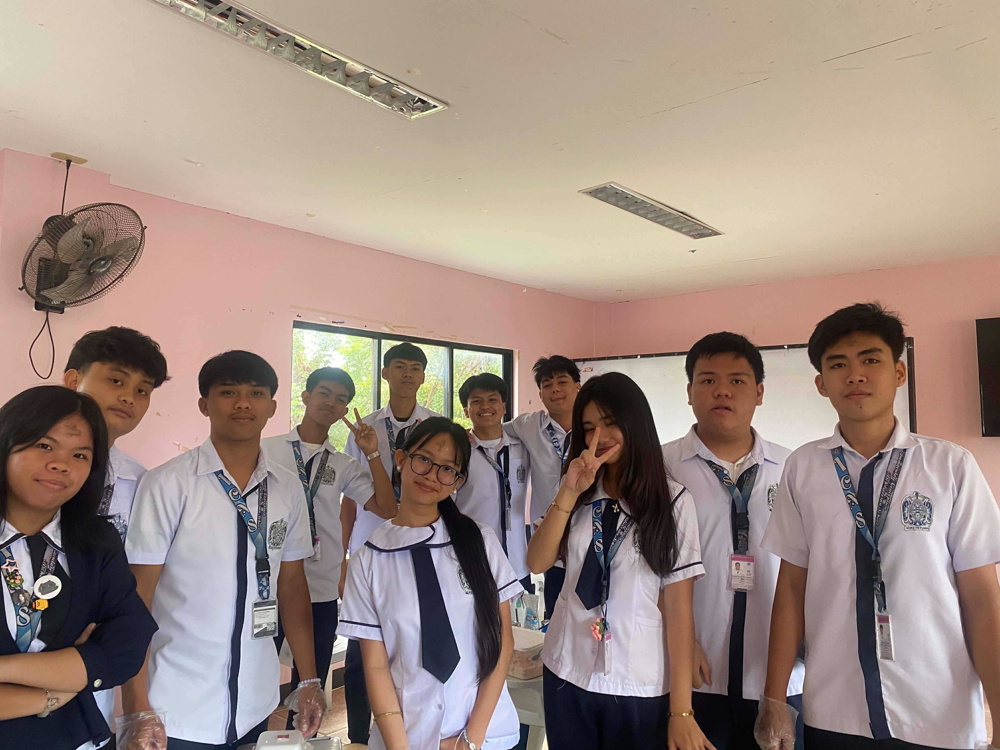
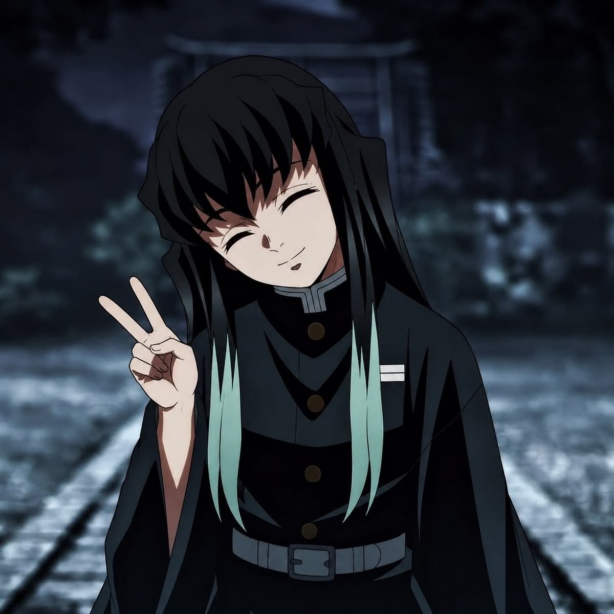
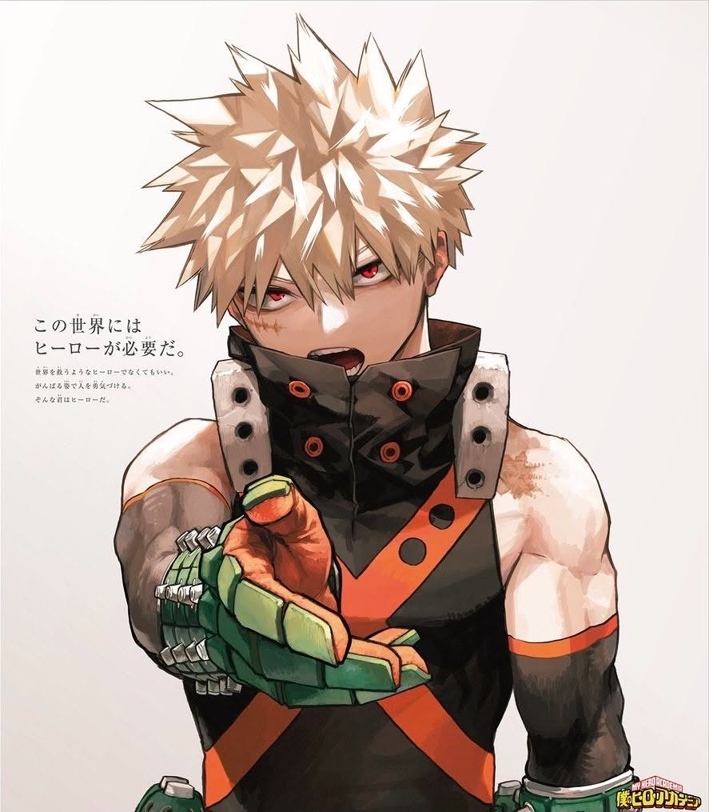
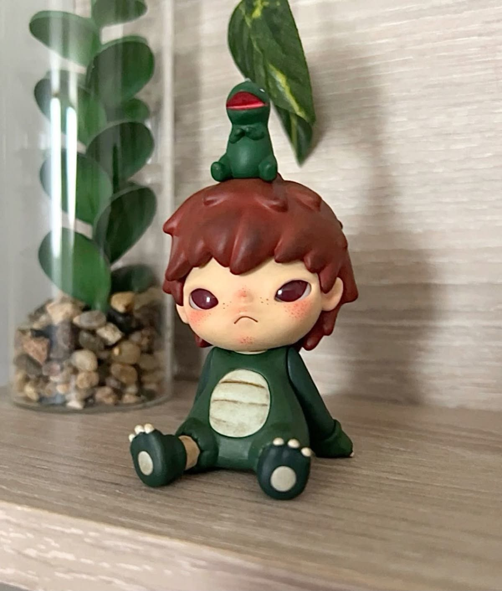
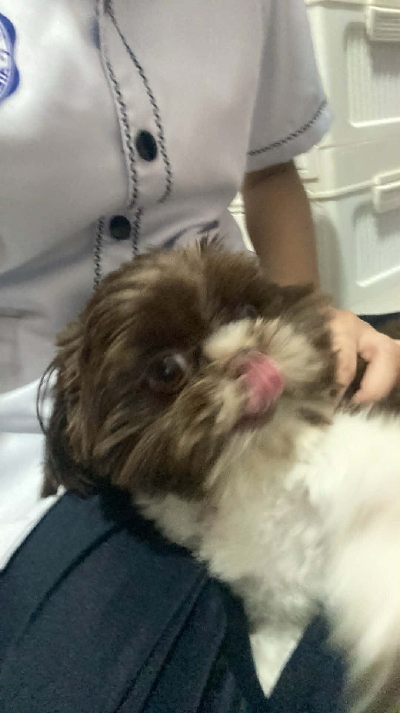

Things That Remind Me of You

Leslie
A simple picture that captures one of those little moments worth remembering.

Beautiful Memories
Another memory that deserves a place in this little collection of moments.

A Moment to Remember
Some pictures may look simple, but they become special because of the memories connected to them.

Another Memory
A small reminder of another moment that deserves to be remembered.

One More Memory
Every picture tells a small part of a story, and this is one of those moments.

Friends
Good memories become even better when they are shared with people who make life more enjoyable.
🎵 A Little Music for You
Sometimes, music can bring comfort when you are tired, overwhelmed, or simply not feeling okay. Whenever life feels a little too heavy, take a moment for yourself, listen to these songs, and let them keep you company. You don't always have to be okay. Just pause, breathe, and give yourself time. I hope these songs make your day a little lighter. 💙🎧

Group Memories
These memories are a reminder of the people who have been part of your journey. The random pictures, the laughter, the silly moments, the conversations, and even the simple times spent together are memories that become special as time goes by.
I hope you always keep these moments close to your heart. Life will continue to change, people will grow, and everyone may eventually take different paths, but that doesn't make the memories any less meaningful. They will always be a part of your story.

Tokito
Happy Birthday, Leslie. Another year has passed, and you've reached another chapter of your life. There will always be difficult days, moments when things don't go as planned, and times when you might feel like you're walking through a dark forest without knowing where the path leads.
But you don't have to be afraid.
If demons appear along the way, I'll be there to protect you. 🌫️ Whether they're the demons of fear, sadness, doubt, or the problems that life brings, you can keep moving forward. I'll make sure the path ahead is clear so you can continue toward the future you dream about.
You deserve peaceful days, genuine happiness, and people who make you feel safe and appreciated. So for today, forget about the things that worry you. Look at the people around you, enjoy the little moments, and remember that this day is yours.
Happy Birthday, Leslie. May this new year of your life be peaceful, beautiful, and filled with memories worth keeping.

Bakugo
Oi, Leslie! It's your birthday, so listen up! I'm not gonna stand here and give you some overly sweet, cheesy speech, alright? But you should know that making it this far is already something worth celebrating. You've faced another year of challenges, problems, and probably a few annoying people too, but you're still here, still standing, and still moving forward.
So this year, don't be afraid to aim higher. If something gets difficult, don't back down. If someone tells you that you can't do something, prove them wrong. Keep fighting for the things you want and don't let anyone make you feel like you're not good enough. And if anyone tries to ruin your birthday or make you cry... I'll take care of them myself! 💥
Have fun today, enjoy every moment, eat as much cake as you want, and make some memories you'll never forget. Just don't get too full of yourself because it's still me giving you the birthday message!

Hirono
Happy Birthday, Leslie. Sometimes life can feel complicated, and not every day will be perfect. There will be moments when you feel tired, moments when you question yourself, and moments when you wonder if you're doing enough.
But I hope you remember that even the smallest moments can have meaning.
A simple laugh with friends, a random conversation, a favorite song, a picture that brings back a memory, or even a quiet moment by yourself can become something you'll treasure someday. So don't rush through life trying to reach the next chapter. Take time to appreciate where you are right now.
I hope you continue to be surrounded by people who make you feel comfortable being yourself. I hope you find happiness even in the little things, and whenever life feels heavy, I hope you find a reason to keep going.
You have so many memories still waiting to be made, places still waiting to be explored, and moments that haven't happened yet. So keep going, Leslie. Your story isn't finished.

Doggie 🐶
I know how much your dogs mean to you. Your dog is not just pet, but also your little source of comfort whenever you feel tired, stressed, sad, or simply need someone beside you. Sometimes, you don't even need words because their presence alone can make things feel a little lighter. I hope you always cherish the moments you have with them, because they are part of the little things that bring happiness and comfort into your life. Arf Arf 🐶💙